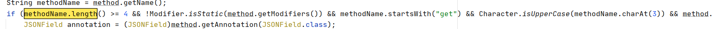

java安全–FastJson 1.2.22-1.2.24漏洞分析
前言
Fastjson是Alibaba开发的Java语言编写的高性能JSON库，用于将数据在JSON和Java Object之间互相转换。最近几年fastjson爆出了不少漏洞，但源头还是fastjson1.2.24爆出的反序列化漏洞,本文记录学习调试该漏洞的过程。
初探fastjosn反序列化
说明
Fastjson在进行反序列化操作时，并没有使用默认的readObject()，而是自己实现了一套反序列化机制。我们通过操作操作属性的setter getter方法结合一些特殊类从而实现任意命令执行。
序列化与反序列化
我们可以首先构造一个User类:
1 | package com.fastjson; |
使用fastjson来对构造的类进行序列化:
1 | String serializedStr = JSON.toJSONString(user1); |
fastjson可以使用三种形式进行反序列化:
- 通过parse方法进行反序列化，parse在解析过程中会调用目标类中的特定setter方法和getter方法
1 | Object obj1 = JSON.parse(serializedStr); |
- 通过parseObject反序列化，不需要指定类,返回JSONObject。parseObject只是对parse进行了简单的封装。
1 | Object obj2 = JSON.parseObject(serializedStr); |
- 通过parseObject({},class),指定类，返回一个相应的类对象。
1 | Object obj3 = JSON.parseObject(serializedStr,User.class); |
最后的结果如下:

三个反序列化方法的区别
关于parse (String text) 、parseObject(String text)、 parseObject(String text, Class
1 | package com.fastjson; |
运行，得到的结果如图:

通过上面的结果。我们可以知道:
使用JSON.parse(jsonstr)和JSON.parseObject(jsonstr, FastJsonTest.class)两种方式返回的结果相同:构造方法+Json字符串指定属性的setter()+特殊的getter()
JSON.parseObject(jsonstr)会调用目标类中所有的getter方法，包括不存在属性和私有属性的getter()。原因是在调用JSON.parseObject(jsonstr)时会多执行JSON.toJSON()方法,JSON.toJSON()会将目标类中所有getter方法记录下来。
什么样getter可以被调用呢?
在JavaBeanInfo类中可以找到：
1 | if (methodName.length() >= 4 && !Modifier.isStatic(method.getModifiers()) && methodName.startsWith("get") && Character.isUpperCase(methodName.charAt(3)) && method.getParameterTypes().length == 0 && (Collection.class.isAssignableFrom(method.getReturnType()) || Map.class.isAssignableFrom(method.getReturnType()) || AtomicBoolean.class == method.getReturnType() || AtomicInteger.class == method.getReturnType() || AtomicLong.class == method.getReturnType())) { |
总结下来有以下六个条件:
- 方法名需要长于4
- 不是静态方法
- 以get字符串开头，且第四个字符需要是大写字母
- 方法不能有参数传入
- 继承自Collection || Map || AtomicBoolean || AtomicInteger ||AtomicLong
- 此getter不能有setter方法
@Type(关键)
fastjson通过@Type可以指定反序列化任意类,之后会自动调用类中属性特定的set和get方法。造成反序列化漏洞正是由于fastjson的这个特性。

我们这里通过@type指定类，成功获取到了对应的数据。

总结
上面我们通过对fastjson反序列化三种方式的学习可以知道。@type关键词会加载任意类，如果字段有setter、getter方法会自动调用该方法，进行赋值，恢复出整个类。也就是说，当我们找到一个类中的getter方法满足调用的条件,并且存在可利用点，就构成了一条攻击链。
TemplatesImpl利用链(<=1.2.24)
利用点
漏洞位置
com.sun.org.apache.xalan.internal.xsltc.trax.TemplatesImpl类中getOutputProperties()方法
限制条件
- 服务端使用parseObject时,必须是
JSON.parseObject(input, Object.class, Feature.SupportNonPublicField); - 服务端使用parse()时,需要
JSON.parse(text1,Feature.SupportNonPublicField);
分析
我们首先找到这条链子最终的漏洞利用点，然后进行逆向回溯找到漏洞点，之后在通过动态调试正向跟一下解析过程
首先找到TemplatesImpl.getTransletInstance方法:

可以看到红框中的使用了newInstance( )方法进行了实例化操作，然后找到获取_class与_transletIndex值的defineTransletClasses()方法，跟进方法内:

找到_bytecodes变量,可以看到这个变量是TemplatesImpl类的成员变量，跟进类内部看一下:

_bytecodes变量可以在构造json字符串时传入，在构造poc时属于可控变量

这里我们继续向下执行的时候需要首先满足这里的_tfactory变量不为null，因为_tfactory为私有变量，且无setter方法，这里需要指定Feature.SupportNonPublicField参数来为_tfactory赋值。(POC中设置_tfactory为{})
在第413行,通过for循环取出值，然后交给了loader.defineClass进行处理：

loader.defineClass主要是将传入的字节码转化成class对象，然后又赋给了_class[i]。
当我们传入比如:_bytecodes:[恶意类]这样的json字符串。程序会将恶意类化为Class对象后赋值给_class[0]。
之后程序回到getTransletInstance中

这时，这里的_class[_transletIndex]就是我们传入的恶意类,然后调用恶意类的newInstance()方法来实例化对象,最后造成命令执行。
我们现在已经找到了存在漏洞的方法，现在只需要找到一条调用链即可。
找到com/sun/org/apache/xalan/internal/xsltc/trax/TemplatesImpl.java
这里调用了存在漏洞的newTransformer() 方法:

向上追踪newTransformer(),发现TemplatesImpl.java中getOutputProperties()方法中调用了newTransformer()

getOutputProperties()方法为_outputProperties成员变量的getter方法。(这里会通过smartMatch() 方法将下划线置空)
TemplatesImpl类_outputProperties成员变量的getter方法满足被调用条件。getOutputProperties()返回类型为Properties，而Properties extends Hashtable，而Hashtable implements Map。无论通过fastjson哪种方式解析json字符串，都可以触发getOutputProperties()方法。
总结
Fastjson通过_bytecodes字段传入恶意类，调用outPutProperties属性的getter方法时,实例化传入的恶意类，调用其构造方法，造成任意命令执行。
利用POC
1 | package 版本24; |
- @Type：指定解析类,根据指定类反序列化得到该类的实例,在poc中，
_bytecodes与_name都是私有属性，所以要想反序列化这两个，需要在parseObject()时设置Feature.SupportNonPublicField - _bytecodes:恶意类class文件二进制格式base64编码得到的字符串
- _outputProperties:调用参数的getOutputProperties方法,造成RCE。
- _tfactory:{}：在defineTransletClasses()时会调用getExternalExtensionsMap(),当为null时会报错，所以要对_tfactory 设值。
动态调试
现在我们已经知道了触发的漏洞点以及POC现在我们正向调试跟踪一下实际调用链，主要看fastjson如何处理我们传入的payload。
首先在JSON.parseObject这个函数这里下个断点。

之后调试跟进，进入com.alibaba.fastjson.parser.DefaultJSONParser类，调用了deriallizer.deserialze来解析传入的数据。

在这里的deserialze是一个接口,跟进对应的序列化类com.alibaba.fastjson.parser.deserializer.JavaObjectDeserializer中。

这里的代码又重新调用了DefaultJSONParser类中的parseObject方法。在这里我们的token值为12,根据if判断进入到skipWhitespace 中:

lexer.skipWhitespace会对传入的text(也就是我们构造好的payload进行处理)

这里我们得到的结果是“,根据if判断跟进lexer.scanSymbol方法:

scanSymbol会根据选择的特殊符号进入到相应的位置进行处理。也就是我们最开始时候key的结果是@type，而继续往下自然进入到了这里。

由于 deserialze 是一个接口，序列化方法类是com.alibaba.fastjson.parser.deserializer.JavaBeanDeserializer#deserialze ，传入的clazz是我们想要实例化的利用类。

接着跟进com.alibaba.fastjson.parser.deserializer.JavaBeanDeserializer#deserialze。这里的token是16，text正是我们传入的值。
继续往下走程序会调用com.alibaba.fastjson.parser.deserializer.JavaBeanDeserializer#parseField方法，

跟进方法，首先会调用smartMatch方法来处理我们传入的key值，而这里的key值就是我们json中的那些字段，比如：_outputProperties、_name、_bytecodes等。

在com.alibaba.fastjson.serializer.ObjectArrayCodec#parseArray中，所以这里又会调用 com.alibaba.fastjson.serializer.ObjectArrayCodec#deserialze 。

这里会先进入decodeBase64方法进行一次base64解码，这就是为什么poc中需要base64编码

在com.alibaba.fastjson.parser.deserializer.DefaultFieldDeserializer 中。最后会通过setValue方式将value赋值给我们要执行的特殊类

在setValue中会调用getOutputProperties()。然后通过method.invoke反射的方式实例化我们的要调用的类。


后续修复分析
1.2.25官方对漏洞进行了修复，对更新的源码进行比较，主要的更新在checkAutoType函数,
1 | public Class<?> checkAutoType(String typeName) { |
这里遍历denyList数组，只要引用的库中是以我们的黑名单中的字符串开头的就直接抛出异常中断运行。
denyList数组，主要利用黑名单机制把常用的反序列化利用库都添加到黑名单中，主要有：
1 | bsh |
后续的绕过接下来再分析。。。。